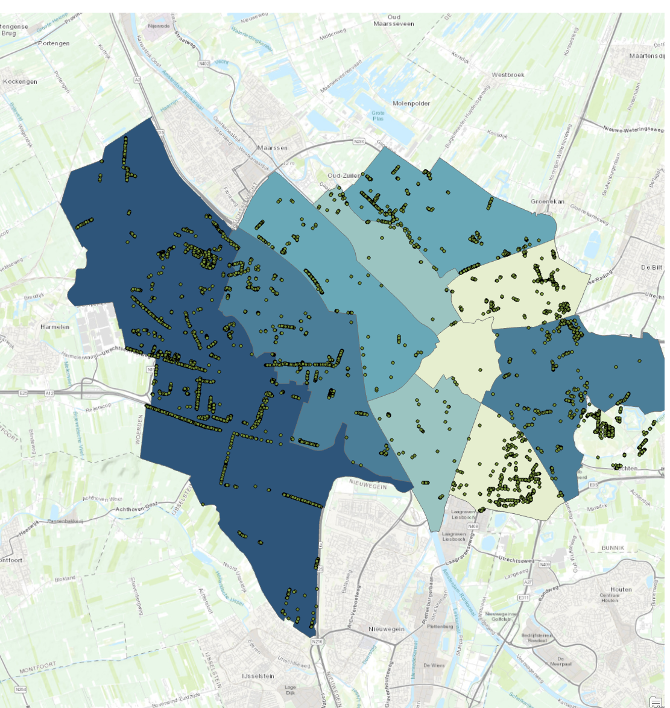

Tree Data in Utrecht, NL

Have you ever wondered “Which Wijeken in Gemeente Utrecht has the most willow trees?” Well, fear not because I had mapped just that! But to keep your anticipation and reader retention, the answer will be revealed at the end!
For this question, I used ArcGIS Pro. This software is a high-end GIS software. It syncs with could data so when importing shapefiles and datasets, you can search in the cloud. So that is what I did.
I imported the Geemente Utrecht and Utrecht Bomenkaart into ArcGIS Pro. With these two datasets imported, I then ran a calculation to highlight every Wilg (willow) tree in the bomenkaart.
Now, all the wilg trees are highlighted in a light blue colour and I used this data to create a choropleth map.
So, for the Choropleth map, I turned on the Wijken section under the shapefile and set the input data to the highlighted data for the choropleth.
Then I was left with the beautiful map that shows the amount of wilg trees in Utrechtls wijken. So now to let that anticipation end, the wijken with the most willow trees is…Vleuten-De Meern. On the map, the darkest blue region has the most wilg whereas the lightest blue has the fewest.
The only two issues I had with the project were exporting the Wilg dataset from the bomenkaart dataset and running the rate area calculator. The first issue was that I didn't know about the export raster function in the toolbox. The second issue couldn't be resolved, I tried for a while and gave up.
If I were to make some changes, I would have printed the choropleth map so that it looks more official and removed and got the rate area calculator to work. The rate area calculator is more useful because instead of trees in the area, it is trees per area. This prevents the largest wijk from having an unfair advantage by sheer size.
Back to My Work
Back Home